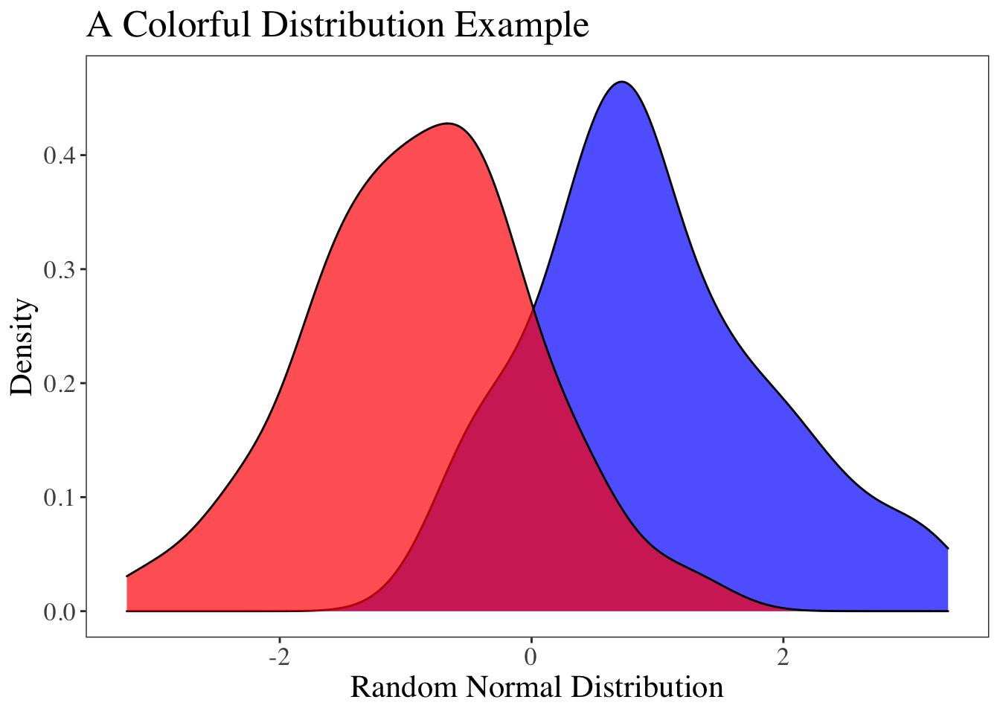

3 Packages and Libraries
What are Packages?
R has hundreds of useful functions, but sometimes you’ll want or need to use a function that’s not built into R. For example, R has several built-in functions for plotting data, such as the hist() function:

And that works fine if you want to quickly analyze your data, but that graph is certainly not publication quality. You could spruce up the plot by installing a package that contains functions for creating much more aesthetically pleasing plots, such as the ggplot2 package.
library(ggplot2)
set.seed(1)
ggplot(tibble::tibble(rnorm = rnorm(100, mean = -1)), aes(x = rnorm)) +
geom_density(tibble::tibble(rnorm = rnorm(100, mean = 1)),
mapping = aes(x = rnorm),
fill = "blue",
alpha = .7) +
geom_density(fill = "red", alpha = .7) +
theme_bw() +
labs(title = "A Colorful Distribution Example") +
xlab("Random Normal Distribution") +
ylab("Density") +
theme(panel.grid.minor.y = element_blank(),
panel.grid.minor.x = element_blank(),
panel.grid.major.y = element_blank(),
panel.grid.major.x = element_blank(),
text = element_text(size = 16, family = "serif"))
The ggplot2 package is simply a collection of R code and functions, created by an R user, that allows you to make highly customizable plots like the one above without too much difficulty.
Installing Packages
There are many packages that you can install to make data analysis easier. One package that we’ll use frequently throughout this book is the tidyverse package. The tidyverse package is actually a collection of packages bundled together– a meta-package. You can install the tidyverse with the following line of code:
What’s a Library?
Once you install a package it becomes part of your “library”. Your library is a collection of all the packages that are installed on your computer. If you click on the “packages” tab in the lower right pane, you can see a list of all the packages that are currently installed. This is your library. Notice how the header says “System Library”.
Loading Packages
Packages only need to be installed once, but they need to be loaded every time you start an R session. Loading a package puts it into the working memory; that way R knows you want to use those functions from those packages. You can load a package with the library() function:
Running the code library(tidyverse) now allows you to use all of the functions that come bundled with the tidyverse package (which is a lot!).
Pro tip: It’s best practice to load your desired package with the
library()function at the very beginning of your R script; that way it’s loaded before the rest of your code is ran.
You can check to see if you installed the tidyverse package and loaded it into your R session correctly by running the ggplot histogram code above. If you see the same plot in your R session, everything is working correctly!
You might be wondering why the ggplot code worked when we loaded the tidyverse package and not the ggplot2 package. This is because the tidyverse is a meta-package, which includes the ggplot2 package within it (along with 7 other packages: dplyr, tidyr, readr, purr, tibble, stringr, forcats). So, if you get into the habit of loading the tidyverse meta-package at the beginning of your script, that will generally take care of everything for you, and you won’t need to worry about loading many (if any) other packages into your R session.